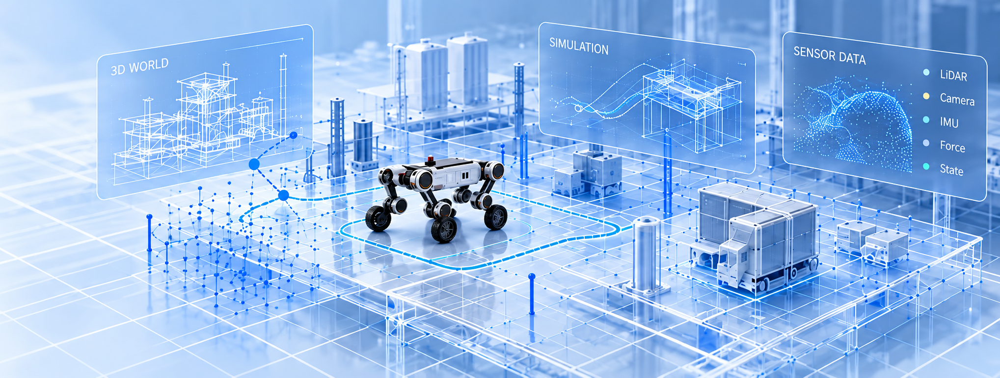
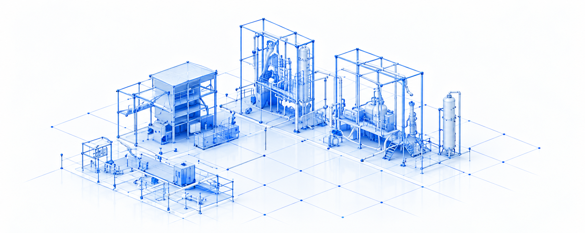
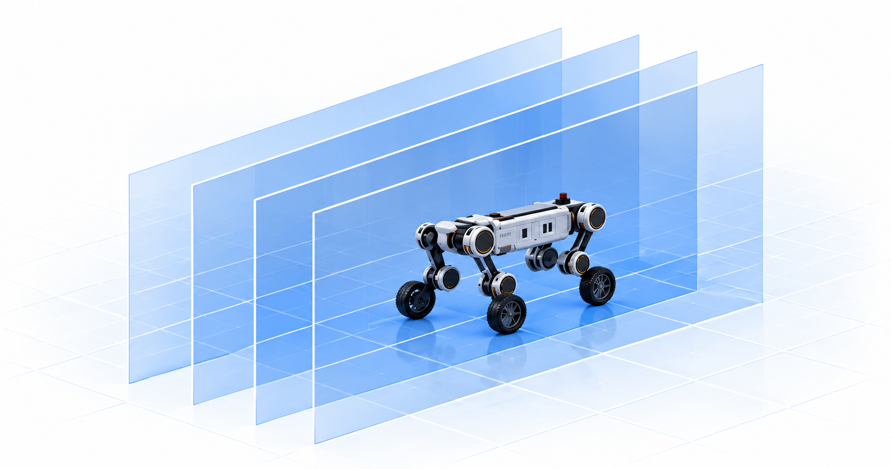
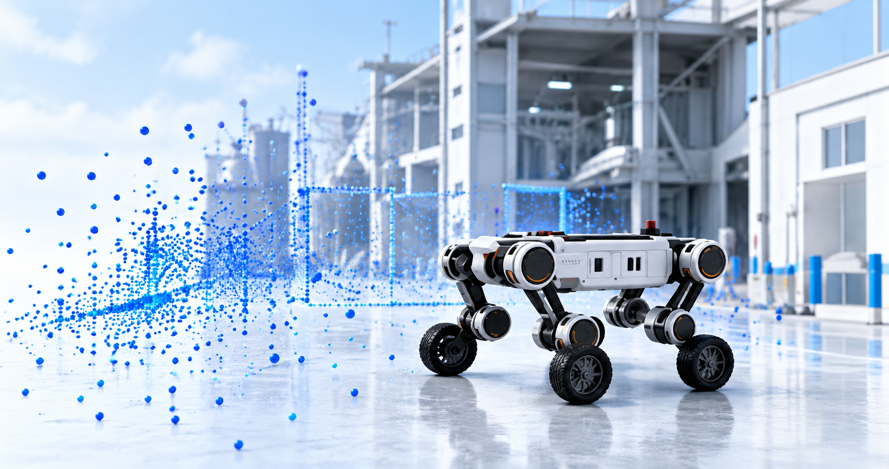

Robot hardware
A reliable platform for real-world execution

03 / TECHNOLOGY
From hardware, 3D worlds and simulation to returning task data, capabilities continuously improve.
A reliable platform for real-world execution

Build repeatable validation environments

Iterate strategies in virtual tasks

Feed task data back to improve capability
04 / SYSTEM ARCHITECTURE
Every layer connects to real tasks and improves with deployment.
Solutions for real-world industries
Multimodal perception and task control
Verifiable, iterative training and evaluation
Real-world task data keeps improving models, hardware and industry applications.
01 / Validate robotic capabilities against site conditions and task goals.
Collect LiDAR, camera and IMU data for reconstruction.
Reconstruct centimeter-scale geometry and realistic textures.
Vary layouts, materials, lighting and weather to create training scenarios.
Use MuJoCo / PhysX for contact, dynamics and sensor simulation.
Iteratively validate reinforcement learning, task planning and inspection policies.